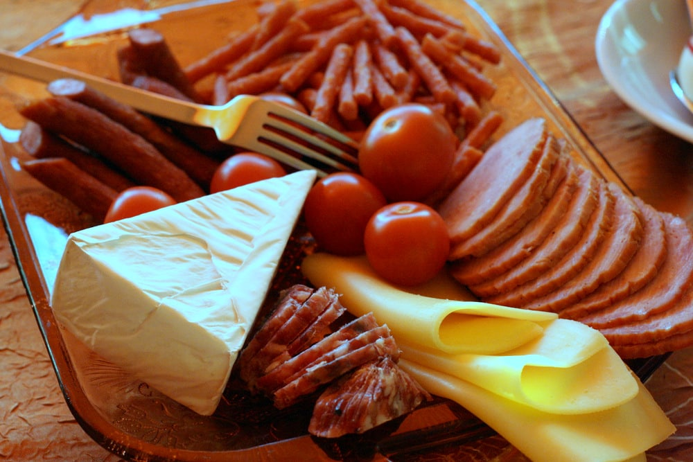

POLONIA
La colazione tipica Polacca ha origini dalla cucina popolare, è molto nutriente. Include uova strapazzate, salsicce, cetrioli e pomodori con delle fette di pane, il tutto accompagnato da tè nero con zucchero.

SVEZIA
La colazione tipica svedese prevede pancake con marmellata, ma anche toast salati ricoperti di formaggi o salumi. Il caffè è la bevanda che accompagna solitamente la colazione.